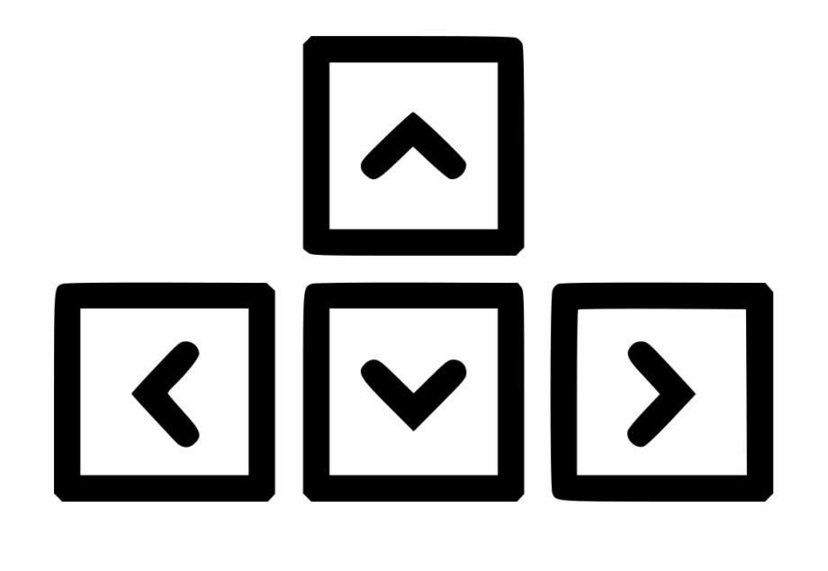

Use your arrow keys to continue...

The advent of industry 4.0 has meant that there's a change in the way that we can approach personalising objects.
Technologies such as 3D printing 7 are enabling the use of computation technologies to produce objects custom designed by users without extensive setup costs.
The internet exposed the ability to be able to communicate larger and larger amounts of data between individuals, and software has been advanced to the point that the barrier to entry of object design is achieveable.
As time goes on & the community of personalised makers persists, these making machines will likely take the same route as the personalised computer and moore's law - they will become better, cheaper, and more ubiquitous8.
Let's have another look at the original question.